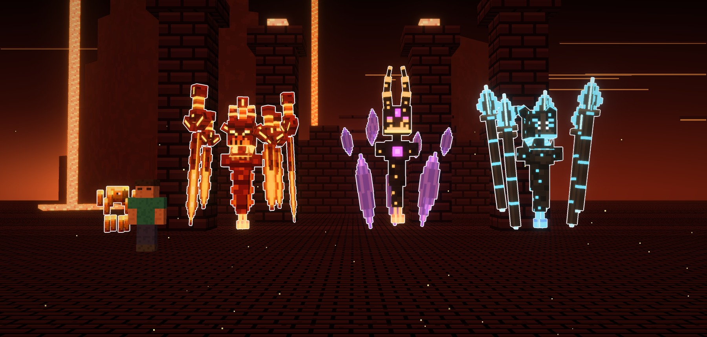
Atalaya · mob · rediseño del Blaze · 15-10-2026
El Blaze, rediseñado
Como en tus dos imágenes, el Blaze sigue siendo un Blaze: la cabeza de bloque que flota, el fuego y lo
que gira alrededor. Pero las varas se convierten en algo grande que flota, la cabeza lleva cuernos y el
cuerpo es una columna sólida que brilla. Son tres: el de las Espadas, el de los Cristales y el de
las Lanzas.
Salen de las dos referencias de Juan, con los cambios que pidió después: en el de las Espadas, sin
las varas de delante y con cara de monstruo; en el segundo, cristales con punta arriba y abajo, casi de pie y con
textura natural; en el de las Lanzas, cara de monstruo. En la foto de arriba, el pequeño de la izquierda es el Blaze
de vanilla, para comparar. Los nuevos miden más de 5 bloques con lo que flota.
- Como en las referencias: bloques con el píxel detallado, a un téxel por píxel del modelo.
- Lo común a los tres:
- la cabeza de bloque con cuernos y la cara que arde;
- el cuello, el pecho con los hombros, el vientre y la cola que se afina;
- el fuego de debajo.
Las fotos van sin letras y con el borde blanco, en la fortaleza del Nether.
A · el de las Espadas · fuego
El de las Espadas
- Sin las varas de delante: solo quedan las seis espadas de fuego que giran a su alrededor, en
corona (tres grandes y tres pequeñas, alternas). Dejan hueco delante de la cara.
- La cara, de monstruo:
- el ceño en uve;
- los ojos rasgados que arden con la sombra de la cuenca;
- la fila de dientes con dos colmillos;
- una quijada que se abre debajo, con el fuego dentro y dos colmillos que suben.
- Lo que queda igual: el cuerpo rojo en bandas y los dos cuernos de punta amarilla.
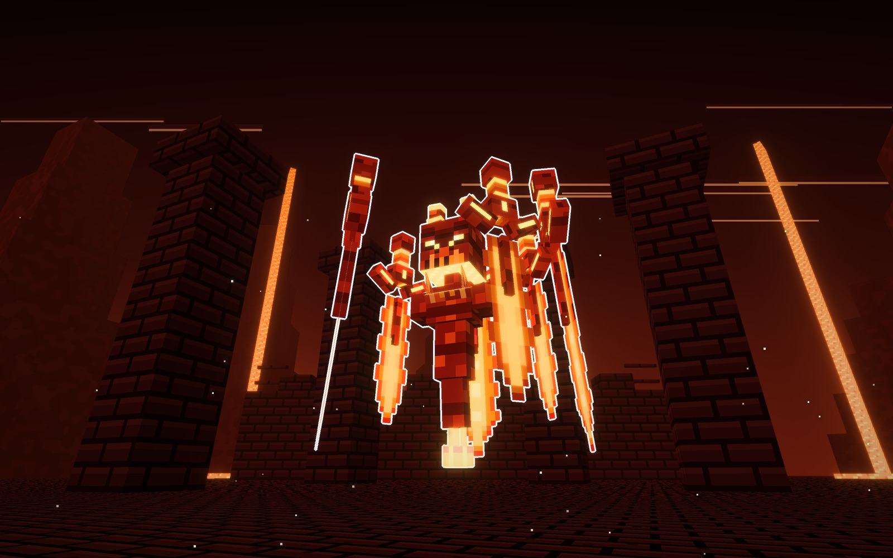
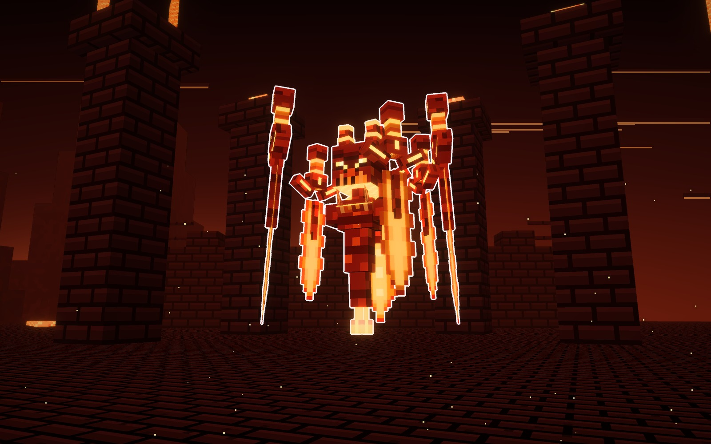
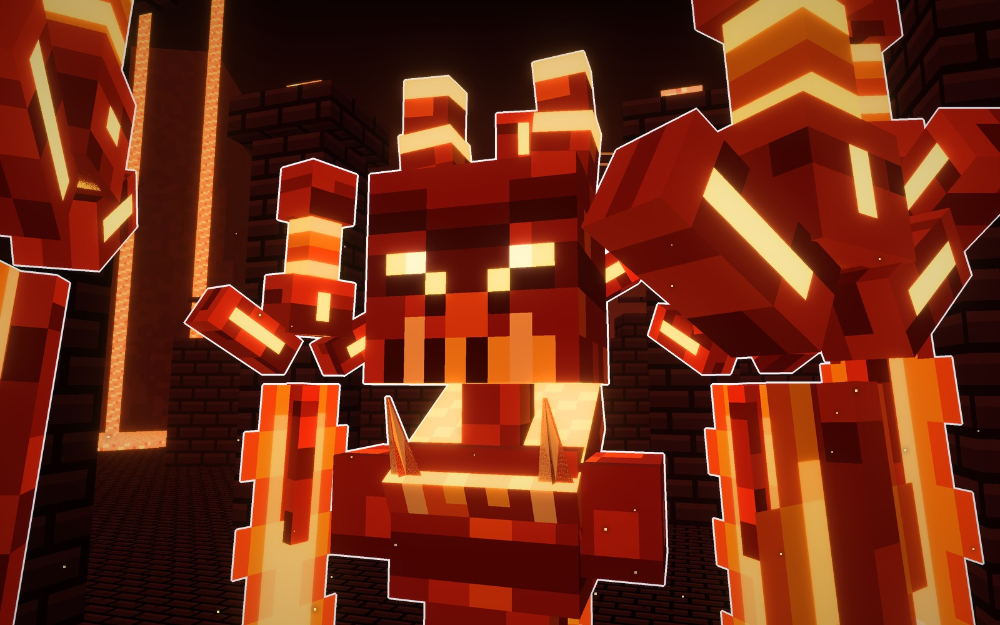
Su forma
- Gira
- seis espadas de fuego
- Cara
- ceño, colmillos y quijada abierta
- Fuego
- amarillo y rojo
Señas
- 4,9 bloques de alto con las espadas.
- Cómo pelearía: lanza las espadas contra el jugador.
B · el de los Cristales · brasa y morado
El de los Cristales
- El cuerpo y la cara, igual que te gustaron:
- de carbón con brasas;
- la cabeza alta con los cuernos largos;
- la gema y los ojos morados;
- la cara encendida por abajo;
- el núcleo morado en el pecho.
- En vez de las tablillas, cristales de amatista que flotan y giran alrededor, con punta arriba y
abajo y casi de pie, solo un poco abiertos: cinco grandes alrededor del cuerpo y cinco pequeños a la altura
de los hombros. Combinan con sus ojos y su gema.
- La textura del cristal, más natural:
- cada tramo es una sola pieza puesta en rombo, con un filo hacia fuera; antes eran dos cruzadas, en
estrella, y lo llenaban de rayas;
- cada cara es lisa, de un solo morado frío que no se vuelve rosa con la luz roja de la fortaleza;
- los filos son algo más claros, que es donde pega la luz en una gema, y las caras se distinguen por la
luz que les da;
- las puntas son un tono más claras y brillan un poco.
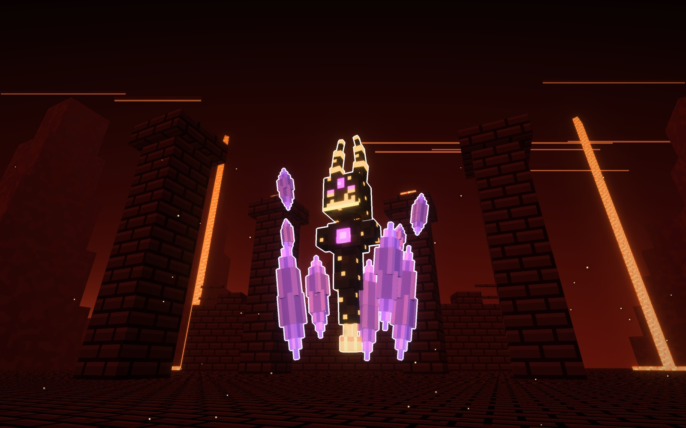
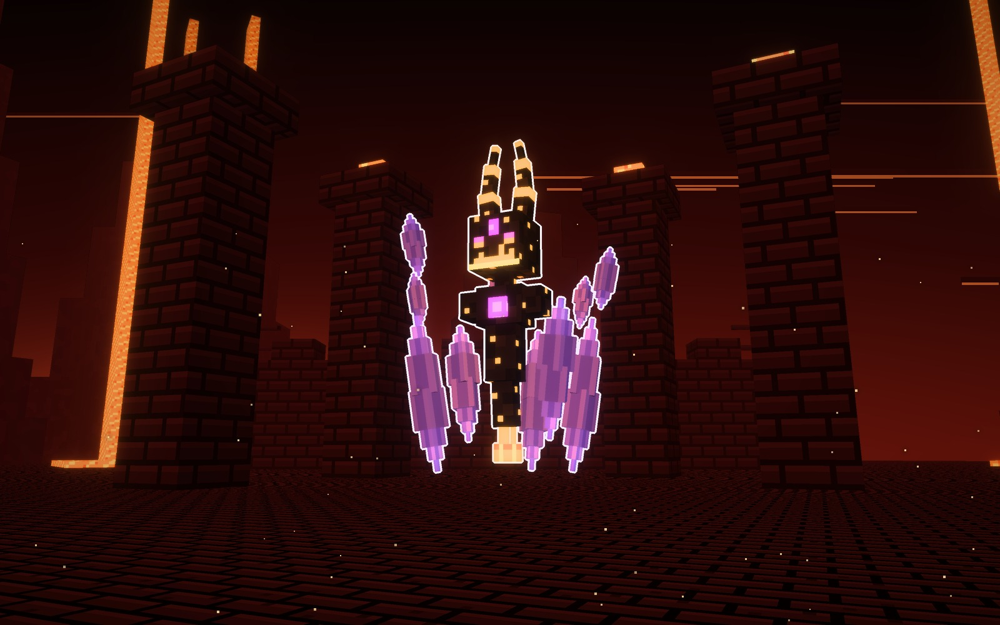
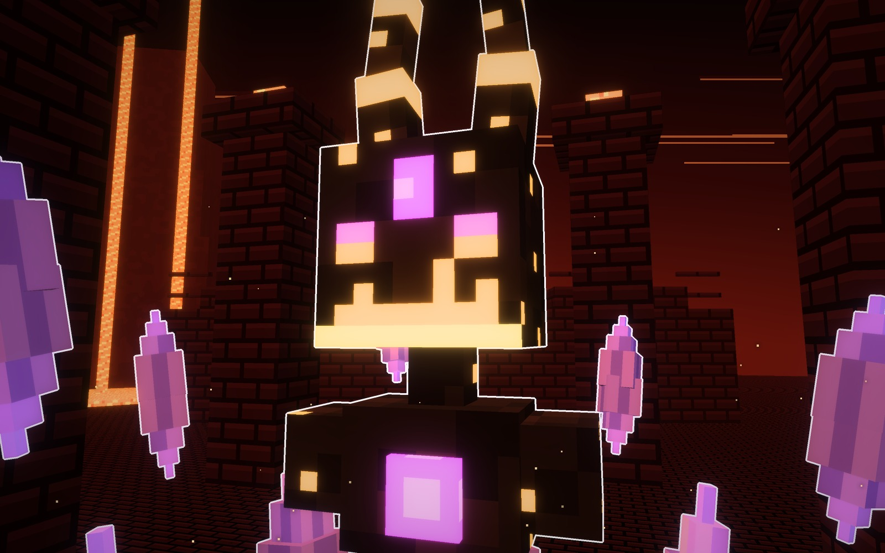
Su forma
- Gira
- cristales de amatista
- Cabeza
- la de antes
- Fuego
- naranja y morado
Señas
- 5,7 bloques de alto con los cuernos.
- Cómo pelearía: dispara los cristales como esquirlas.
C · el de las Lanzas · fuego de alma
El de las Lanzas
- La cara, más de monstruo:
- cuatro ojos rasgados que arden en azul;
- una cresta de hueso en medio de la frente;
- los dientes desiguales;
- la quijada abierta con el fuego de alma dentro y dos colmillos.
- Lo que queda igual: el cuerpo de ceniza con motas de fuego de alma y los cuernos echados atrás.
- Seis lanzas de hierro flotan de pie en corona, como las varas del Blaze pero hechas armas. Tienen
anillos azules y la punta en hoja de fuego de alma.
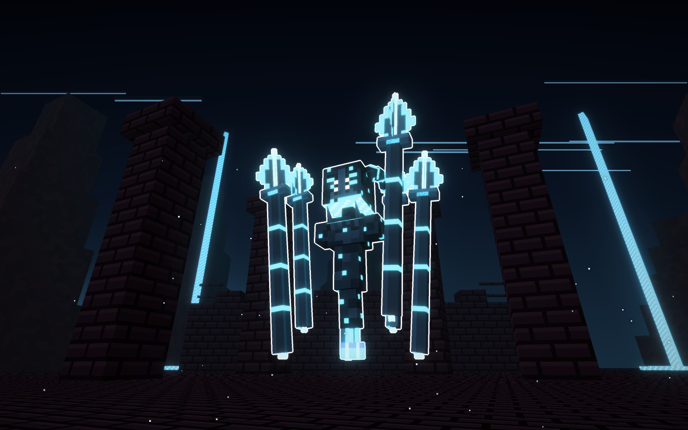
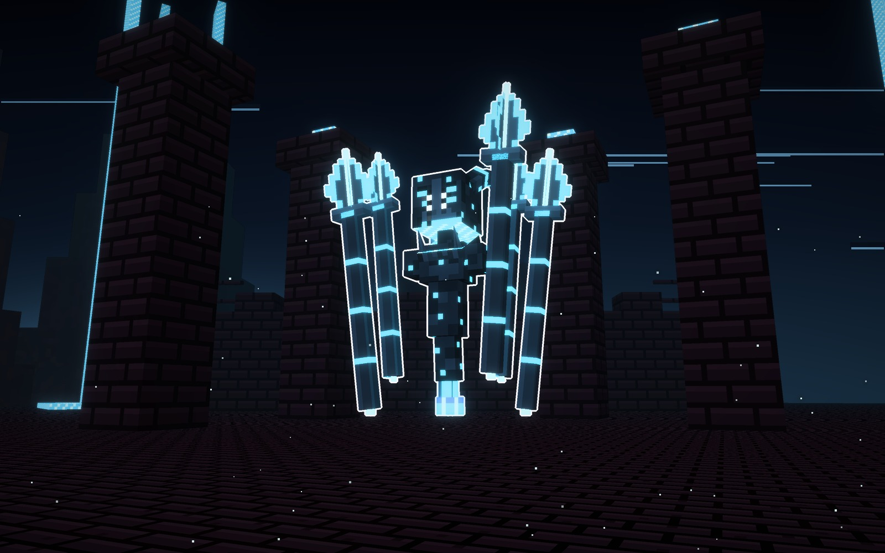
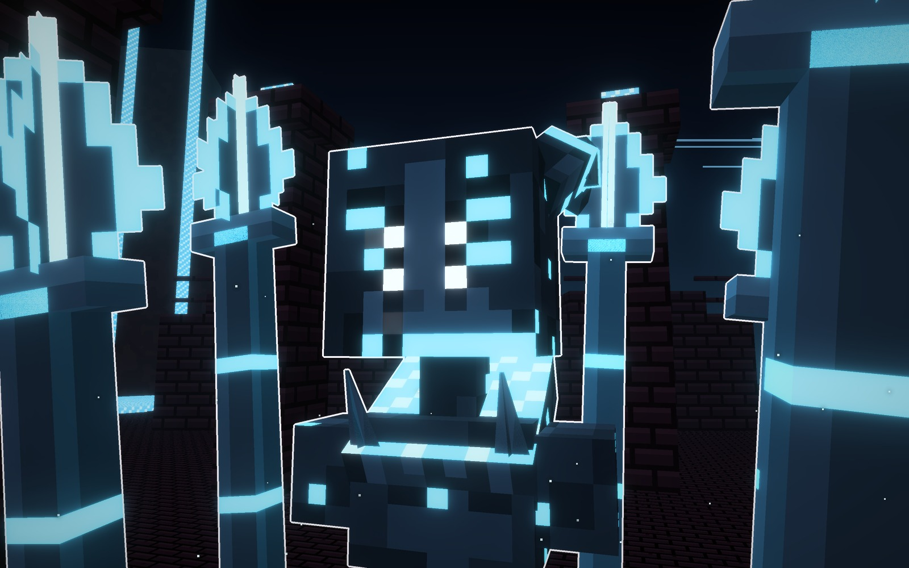
Su forma
- Flota
- seis lanzas en corona
- Cabeza
- cuernos echados atrás
- Fuego
- alma, azul
Señas
- 5,2 bloques de alto con las lanzas.
- Cómo pelearía: lanza las lanzas desde arriba, en lluvia.
Con el Blaze de vanilla y un jugador
De izquierda a derecha: el Blaze de vanilla (1,8 bloques), el jugador, el de las Espadas, el de los
Cristales y el de las Lanzas.
Los materiales
Una fila por blaze. Espadas: la piel, la cara, la vara, la hoja, la guarda y el puño. Cristales: la
piel, la cara, el núcleo, el cuerno y el cristal en la base y en la punta. Lanzas: la piel, la cara, el asta, la punta y el cuerno.
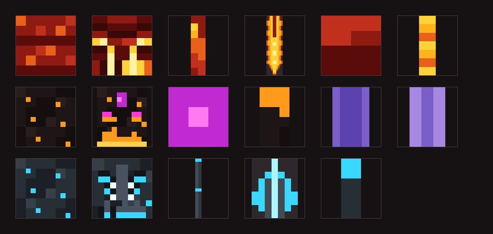
Veredicto de Juan
15-10-2026. Juan aprobó los tres después de la textura nueva de los cristales: «ahora sí me gustó, guárdalo en
mobs». Después pidió seguir con el Slime.
Bocetos: materiales/generadores/blaze_modelo.py y blaze_escenas.py (y blaze_modelo_vanilla.py, el de
vanilla para comparar).